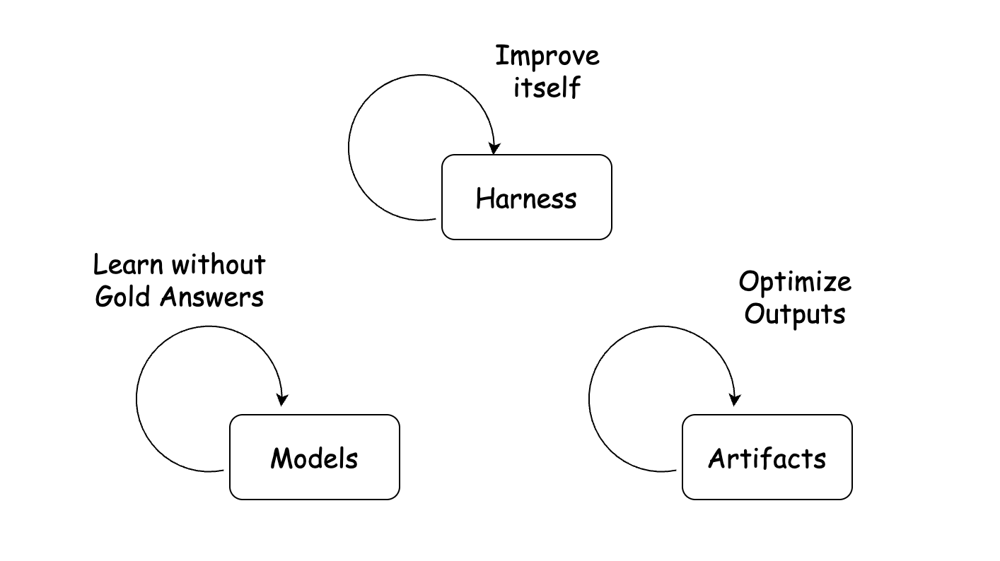
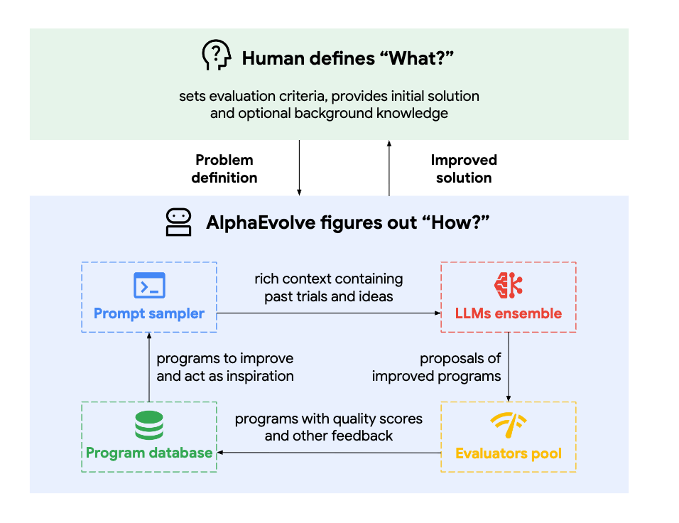

自进化Agent，到底进化了什么？
“self-evolving”、
作者的核心分类标准是“谁被更新”。Artifact 优化让 Agent 反复改进外部产物；Harness 改进让 Agent 更新自己的提示词、记忆、工具、技能或专家结构；Model 学习则用伪标签、内部信号、自博弈或环境反馈改变权重。三者在早期系统里常被分开，成熟系统会逐渐把它们连成一个共同进化的闭环。
先把 Agent 拆成三个可变化的位置
这篇文章最有价值的不是又造一个术语，而是提供了一组足够稳定的观察对象。只要先问清 Model、Harness、Artifact 各自是什么，后面的“学习”与“进化”就容易分开。
这里有一个关键提醒：名称里出现 “learning” 并不意味着一定更新权重。只要把 Harness 视为 Agent 的一部分，那么提示词、记忆、工具和技能的变化，也可以合理地被称为 Agent 学习。
同样叫“自进化”，三个闭环其实在改不同东西
点击三种类型，在同一个坐标系里比较变化对象、反馈信号、是否修改权重，以及作者列举的代表工作。
产物迭代优化
人类定义目标与评估标准，Agent 反复提出、检验并改写外部产物。系统看起来在“自进化”，但直接被优化的是输出，不一定是 Agent 自身。
- AlphaEvolve：算法与科学发现
- FARS：自动研究与论文生成
- NVIDIA ENPIRÉ、LabOS、Qumus：把闭环推进机器人、实验室与材料世界

第一层：Agent 不改自己，先把产物越做越好
这波“自进化 Agent”热潮很大一部分来自 Artifact iterative optimization。它的结构并不神秘，变化在于 LLM 同时充当候选生成器、结果阅读者和搜索策略制定者。
LLM 改变了搜索空间，也改变了搜索者
在 LLM 之前，研究者往往先手工定义操作符，再在这些操作符组成的空间里搜索。神经架构搜索和 EfficientNet 是作者给出的旧范式例子。LLM 出现后，模型既能发明新的候选，也能阅读此前结果并决定下一步，因此一边扩大搜索空间，一边提供更灵活的启发式搜索。

从数字环境走向物理环境
当前大多数 Agent 仍运行在代码库、浏览器、终端和模拟器中，反馈容易自动获得。更有野心的方向是让循环触碰真实世界：NVIDIA 探索机器人策略，LabOS 连接生物实验室，Qumus 面向量子材料实验。作者判断，Artifact 优化的价值最终要看它能否改进 Agent 系统之外的东西。
为什么长时程能力是这类系统的关键变量
作者对比了 2024 年的 LLaVA-Plus 与 2026 年的 Agent：前者能完成的工具调用少于 5 次，需要频繁人工介入；现在的强模型已经可以少干预地运行数小时。循环结构早已存在，真正让它重新变得实用的是模型对长任务的承载能力。
第二层：不训练模型，也能让 Agent 在部署后变强
Harness self-improvement 的目标不是直接改输出，而是更新 Agent 自己的运行组件。文章把它分为提示词与记忆、工具与技能，再进一步延伸到多 Agent 专家系统。
不是死记问题与答案，而是抽取可复用规则，写回提示词、playbook 或记忆系统。相似但不完全相同的任务，也可能从这些规则中受益。
文本知识不总能直接行动。面对长视频取关键帧这类任务，更有效的做法是生成可执行工具，再把工具封装成可复用技能。技能也承担上下文压缩，避免每次把全部细节塞进窗口。
当 playbook、工具和技能不断增多，单 Agent 会变慢、变混乱。把不同分布的数据交给不同专家，再由 router 分配任务，是把 Harness 改进扩展到多 Agent 的方式。
“A human is a router.”
作者把路由视为人类专家的重要能力：我们不仅把任务交给 Agent，还判断该交给谁、是否应该进入下一步。多 Agent 能否扩展，瓶颈往往不是专家数量，而是能否准确选择专家。
为什么“更多工具”可能让系统更差
如果用户只问股票，系统不需要携带烹饪工具。无关工具会拖慢选择，也会制造语义冲突。作者用 “squeeze” 举例：它既可能指市场的逼空，也可能指挤橙汁。专家化本质上仍是上下文管理，每个专家只携带自己真正需要的知识、工具和历史。
这一层和 Artifact 优化的分界线
判断标准不是“有没有循环”，而是循环在修改谁。反复优化一段 kernel 代码时，被改的是 Artifact；如果系统为了下次搜索更有效而更新提示词、记忆、工具或搜索策略，那么 Harness 也进入了自我改进。
第三层：没有金标准答案，模型权重怎么更新？
这一方向常常不自称“self-evolving agent”，而使用 self-training、weak supervision、self-play、reinforcement learning、test-time training、online learning 或 continual learning 等名字。共同点是：学习最终改变模型参数。
伪标签与内部信号
从数据或模型自身构造近似目标。伪标签可用于 SFT，能转成奖励的信号可用于 RL。作者以苹果计数为例：没有真值时，预训练模型对 4、5、6 的置信分布仍比随机猜测更有信息。
自博弈与环境弱信号
另一个玩家也可以视作环境的一部分。SPIN、Absolute Zero 使用自博弈，Agent Learning via Early Experience 则从环境交互中学习。即使“没有回应”，也可能构成反馈。
推理期结构更新
Test-time Training 走的是另一条路线：某些序列模型可被解释为在推理期间持续对内部矩阵做梯度式更新。目标相近，但机制与 Agent Harness 循环很不同。
Continual Learning 是一个会随时代漂移的词
经典持续学习关心的是灾难性遗忘：模型学会识别 SUV 后，不能忘掉原先会识别的 sedan。作者指出，旧问题最有效的方法之一至今仍是 replay 一部分旧样本。但在今天的 LLM 讨论中，“continual learning”有时已经被用来指更接近自进化 Agent 的系统。
| 术语 | 主要变化对象 | 典型信号 | 与本文分类的关系 |
|---|---|---|---|
| Self-training | Model | 模型生成的伪标签 | 属于无金标准答案的模型学习 |
| Reinforcement learning | Model | 可计算奖励或验证信号 | 当奖励不依赖人工金答案时进入本层 |
| Continual learning | Model，语义正在扩张 | 连续数据流与旧样本 replay | 经典问题是遗忘，现代用法可能覆盖更广 |
| Test-time training | Model 内部状态或参数 | 推理时输入与自监督目标 | 目标近似，但架构机制不同 |
| Harness learning | Prompt / Memory / Tool / Skill | 任务历史、错误与可复用经验 | 不改模型权重，仍可视为 Agent 学习 |
真正强的系统，不会永远只改一层
三分法适合定位一个工作的主要入口，但作者明确提醒：Model、Harness、Artifact 的边界会随着系统能力提升而模糊。
抽象层级一直在向上移动
作者用编程工具的演化解释这种趋势：我们逐渐把更多低层对象打包成新的抽象，然后在更高层思考。自进化系统也会从局部模块优化，走向对整个系统的联合改进。
别先问它叫什么，先问闭环最后连到哪里
作者在结尾把分类压缩成三个可复用的问题。它们比术语更能判断一个新系统的能力边界，也能揭示系统最终会优化什么。
这篇文章真正希望读者改变的，是判断“自进化”的方式：不要被名称吸引，也不要只看系统有没有自循环。先定位更新对象，再追踪反馈来源，最后确认闭环落点。世界仍是最难的环境，也正是这类系统最值得产生价值的地方。
原文提到的代表工作与延伸阅读
- AlphaEvolve：产物迭代优化。
- Hermes Agent Skills：自动创建与复用技能。
- Eevee：多专家 Agent 与不同数据分布。
- TTRL：利用内部信号训练模型。
- Test-time Training：推理期间的模型更新视角。
- Continual Learning survey：经典持续学习问题。